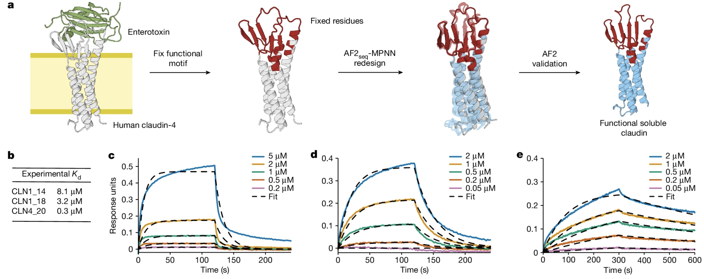

Nature|计算设计可溶有功能膜蛋白类似物
2024-10-08T21:04:28+08:00 | 7 分钟阅读 | 更新于 2024-10-08T21:04:28+08:00

一种基于深度学习的从头蛋白质设计计算流程。
该过程利用AlphaFold2 (AF2)生成蛋白质结构，利用ProteinMPNN优化序列，这种方法可以设计稳定的蛋白质折叠。本文计算设计了以前非常具有挑战性的高度稳定的折叠（免疫球蛋白样折叠 (IGF)、β-桶状结构 (BBF) 和 TIM-桶状结构 (TBF)）以及整合膜蛋白折叠的可溶性类似物（紧密连接蛋白claudin、菱形蛋白酶rhomboid protease、G 蛋白偶联受体 (GPCR)），而无需参数设计限制或后续实验优化。最后，证明了可溶性类似物可以以构象特异性的方式设计，同时保留具有结构复杂特征且具有生物和治疗相关性的天然功能基序，例如G蛋白结合界面和毒素-受体相互作用位点。
目前Rosetta蛋白质生成的约束：
1、 需要参数和对称约束来指导设计过程
2、 需要大量的实验筛选和优化
所以，设计具有复杂结构（包括非局部拓扑和大尺寸）的蛋白质折叠仍然具有挑战性。本文分析了蛋白质结构分类(SCOP)数据库中的蛋白质折叠空间，并观察到可溶性蛋白质和细胞膜环境中的蛋白质在结构层面上的分离。
Inversion of the AF2 network
设计目标准备
AF2通过损失函数优化生成初始序列，对所有生成的序列进行了三次循环预测，随后在AMBER力场中进行松弛。这样得到了高质量的结构，作为输入用于ProteinMPNN进行序列生成。
损失函数的使用
复合损失函数计算误差梯度
- 框架对齐点误差(FAPE)损失量化了预测的Cα原子和目标结构之间的L2范数
- 距离损失(dist)是Cβ距离（对于非甘氨酸残基）和Cα距离（对于甘氨酸而言）的交叉熵
- Cα位置的模型置信度(pLDDT)损失通过取 1−pLDDT 计算得出，对低置信度进行惩罚
- pTM分数损失是一个关注整体结构相似性的预测置信度指标
本文WFAPE=1.0，WpLDDT=0.2和WpTM=0.2生成设计。在初始轨迹期间，Wdist设置为0.5，而在轨迹重生成期间将其禁用。
梯度下降
通过初始的序列设计、AF2 结构预测、损失计算和优化，不断迭代来设计出符合目标结构的蛋白质序列。
-
初始化氨基酸序列：最开始，设计的氨基酸序列是根据目标蛋白质的二级结构（如螺旋、β折叠、环）来进行初始化。为了简化这个过程，分别用几种常见的氨基酸来代表这些二级结构：
- 螺旋：用丙氨酸(A)表示
- β折叠：用缬氨酸(V)表示
- 环状结构：用甘氨酸(G)表示
这样可以帮助生成的序列更接近目标结构。
-
引入随机突变：为了让设计更具多样性，不局限于一个固定的序列，在初始的氨基酸序列中，随机地把10%的氨基酸替换掉。这是为了让设计过程有一些随机性，避免“卡”在某个固定解上。
-
通过AlphaFold2预测结构：将这个突变后的序列输入到AlphaFold2（AF2）网络中，生成5个可能的三维蛋白质结构。这些结构是根据预测的折叠方式生成的。
-
计算损失值：接下来，使用一个预定义的损失函数来评估生成的结构与目标结构的差异。损失值是为了衡量生成的结构与目标结构的“差距”。
-
计算误差梯度：通过计算损失值，我们可以得到每个氨基酸的误差梯度，表示每个氨基酸对最终错误的贡献。这个误差梯度是一个5×20×N的矩阵，意思是：
- 5：每个结构对应一个误差矩阵
- 20：代表20种可能的氨基酸
- N：表示序列的长度
然后，将这5个矩阵平均，得到一个表示整体误差的平均矩阵（20×N），用于后续的优化。
-
更新评分矩阵(PSSM)：使用ADAM优化算法和归一化误差梯度来更新PSSM（位置特异性评分矩阵）。这个矩阵大小为20×N，表示每个位置对应的氨基酸的打分。
-
softmax函数和选定氨基酸：更新后的PSSM经过softmax函数处理，将评分矩阵转化为每个位置上氨基酸的概率分布。接着使用argmax函数选择每个位置上最可能的氨基酸，从而得到一个新的氨基酸序列。
-
避免半胱氨酸：为了避免生成的序列中包含半胱氨酸，在整个过程中，PSSM中的半胱氨酸被掩盖掉。
-
重复迭代：这个流程会不断重复，通过每次迭代产生新的氨基酸序列，并在每次迭代中优化，使设计的蛋白质序列越来越接近目标折叠结构。
Computational design protocol
 根据与目标的结构相似性、置信度和序列多样性，ProteinMPNN在每个AF2序列设计轨迹中，进行了500轮梯度下降优化。并非所有claudin、rhomboid蛋白酶和GPCR的设计轨迹都收敛，因此，本文从成功的轨迹中采样序列并引入突变，同时禁用了距离矩阵损失(distogram loss)。这些序列随后被用作新设计轨迹的起点，称之为`soft starts`，从而提高了收敛率。
## MPNNsol模型的训练
截至2021年8月2日通过X射线晶体学或冷冻电镜解析、分辨率优于3.5Å并且残基数少于10,000的PDB中的蛋白质组装体。在采样过程中，对极性氨基酸（如丝氨酸、苏氨酸、天冬酰胺、谷氨酰胺等）给予正采样偏差，即增加它们被选中的概率（极性氨基酸通常参与关键的分子相互作用），同时对丙氨酸给予负采样偏差，即减少其被选中的概率，可以得到最佳的设计结果。
## Filtered by ProteinMPNN
1. **vanilla ProteinMPNN模型**：
- 使用了已经训练好的模型权重，这些权重来自ProteinMPNN的官方模型。
- 该模型是在一个带有0.1Å高斯噪声的数据集上进行训练的。加入噪声是为了让模型更具泛化能力，即使在有少量结构误差的情况下仍能有效工作。
根据与目标的结构相似性、置信度和序列多样性，ProteinMPNN在每个AF2序列设计轨迹中，进行了500轮梯度下降优化。并非所有claudin、rhomboid蛋白酶和GPCR的设计轨迹都收敛，因此，本文从成功的轨迹中采样序列并引入突变，同时禁用了距离矩阵损失(distogram loss)。这些序列随后被用作新设计轨迹的起点，称之为`soft starts`，从而提高了收敛率。
## MPNNsol模型的训练
截至2021年8月2日通过X射线晶体学或冷冻电镜解析、分辨率优于3.5Å并且残基数少于10,000的PDB中的蛋白质组装体。在采样过程中，对极性氨基酸（如丝氨酸、苏氨酸、天冬酰胺、谷氨酰胺等）给予正采样偏差，即增加它们被选中的概率（极性氨基酸通常参与关键的分子相互作用），同时对丙氨酸给予负采样偏差，即减少其被选中的概率，可以得到最佳的设计结果。
## Filtered by ProteinMPNN
1. **vanilla ProteinMPNN模型**：
- 使用了已经训练好的模型权重，这些权重来自ProteinMPNN的官方模型。
- 该模型是在一个带有0.1Å高斯噪声的数据集上进行训练的。加入噪声是为了让模型更具泛化能力，即使在有少量结构误差的情况下仍能有效工作。
-
MPNN偏差版本：
- 有一个“有偏差的ProteinMPNN”版本，也称为MPNN偏差，是对官方提供的脚本进行修改后的结果（修改了
submit_example_8.sh脚本）。 - 在这个版本中，对极性氨基酸赋予正采样偏差，而对丙氨酸赋予负采样偏差。这意味着模型在生成序列时，更倾向于选择极性氨基酸，而较少选择丙氨酸。这样可以得到更符合预期的设计结果。
- 有一个“有偏差的ProteinMPNN”版本，也称为MPNN偏差，是对官方提供的脚本进行修改后的结果（修改了
-
MPNN sol模型：
- 使用了两种不同版本的MPNN sol模型，它们在不同噪声水平的数据集上进行训练：
- 一种模型是在0.1Å噪声下训练的。
- 另一种是在0.2Å噪声下训练的。
- 通过使用不同噪声训练的模型，尝试捕捉结构中可能存在的不同程度的变化。
- 使用了两种不同版本的MPNN sol模型，它们在不同噪声水平的数据集上进行训练：
-
生成序列：
- 对于每个AF2生成的主干，使用ProteinMPNN生成两个序列。这意味着，对于每一个输入的主干，模型会生成两个不同的候选序列。
- 在输入的主干中，不添加额外的高斯噪声，这意味着主干结构是直接来自AF2的，保持其原始精度。
- 在生成过程中，掩盖了半胱氨酸残基，即不允许设计出的序列中包含半胱氨酸。这是为了避免生成不必要的二硫键结构（半胱氨酸可以形成二硫键）。
使用不同版本的 ProteinMPNN（包括vanilla、MPNN偏差版本和不同噪声水平的MPNN sol模型）来生成新的氨基酸序列，通过加入采样偏差、掩盖半胱氨酸等策略来优化设计，使其更符合目标结构的需求，这个过程最终会为每个AF2主干生成多个优化的蛋白质序列，并帮助加速蛋白质设计过程。
设计claudin-1和claudin-4的功能类似物
 本文首先使用AF2进行结构预测，启用了MSA（多序列比对）和模板，因为缺少高分辨率的实验结构。这些预测结果随后用作设计和重新预测的结构模板，因为AF2在单序列模式下无法预测野生型胞外区域。为了减少折叠偏差，本文从模板中移除了所有序列和侧链信息。尝试了几种claudin功能设计策略，其中两种成功：
- （1）仅重新设计跨膜表面，大约占序列的40%；
- （2）重新设计整个跨膜区，包括核心区域，大约占序列的60%。
GPCR构象特异性设计
 本文使用了活性构象与mini-Gs结合的腺苷A2A GPCR模板（PDB 5G53）和非活性构象（PDB 3VGA）的模板，分别设计每种状态。在每种状态设计中固定了与G蛋白相互作用的残基和进化上保守的DRY基序，设计得到的结构具有相同的长度和相同的功能位点。对于活性构象的设计，我们发现如果没有G蛋白存在，无法生成高置信度的设计；因此，梯度下降和预测是在mini-Gs结合物存在的情况下进行的。
本文使用了活性构象与mini-Gs结合的腺苷A2A GPCR模板（PDB 5G53）和非活性构象（PDB 3VGA）的模板，分别设计每种状态。在每种状态设计中固定了与G蛋白相互作用的残基和进化上保守的DRY基序，设计得到的结构具有相同的长度和相同的功能位点。对于活性构象的设计，我们发现如果没有G蛋白存在，无法生成高置信度的设计；因此，梯度下降和预测是在mini-Gs结合物存在的情况下进行的。
筛选选择
所有生成的序列均使用AF2在AMBER力场中进行三次循环和一个松弛步骤进行预测。接下来，使用以下标准筛选序列：
-
TM得分要求：
- 除菱形蛋白酶外，所有设计的TM得分 > 0.80。
- 菱形蛋白酶在设计轨迹中产生的TM得分略低，因此选择了截止值0.75。
-
pLDDT得分要求：
- 除菱形蛋白酶外，所有设计的pLDDT > 80。
- 对于菱形蛋白酶，pLDDT > 75。
-
序列新颖性要求：
- e值阈值 > 0.1，用以确保设计的序列在新颖性上的可靠性。